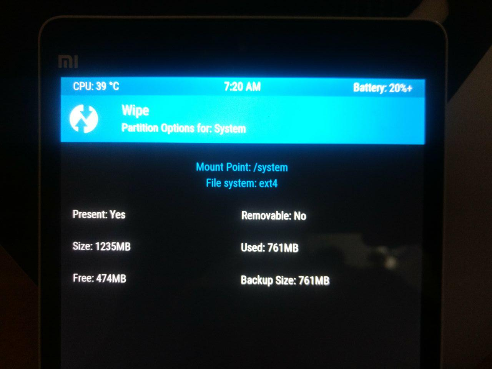

How To Install Custom ROMs In Xiamo MiPad?
Mi Pad and other Xiamo devices has Mi UI OS which is a dual boot system. A major problem with this system is it has only ~600 MB of space in 1st partition. Because of this, we cannot install some custom ROMs as they need more space. In this article we will see how to merge both partitions to get more free space and install any custom ROM.
Install TWRP
Dowload latest recovery from twrp.me. Copy it to android device or push it to android using adb.
adb push -p twrp-3.1.1-0-mocha.img /sdcard/
Now put the device into fastboot mode by pressing Volume down & Power button simultanesouly when you switch it on. When in fastboot mode, flash the downloaded recovery file
sudo fastboot flash recovery twrp-3.1.1-0-mocha.img
Now we can go to recovery mode using adb.
adb reboot recovery
Merge partitions
Before installing custom ROM, we need to merge partitions so that we will have enough space to install ROM. If you are familiar with parted command, you can directly merge the partitions from terminal in TWRP recovery.
There is also a script which you can flash to do the partition. You can read this guide on mi forum for more information.
After partition is completed, from TWRP go to Wipe -> Advanced wipe -> Select System -> Click on Repair or change file system. Here it should show that free space in system is more than 1GB.

Install ROM
After partitions are merged, it is straight forward to install any custom ROM. Download a custom ROM like lineage or RR, push it to device and then install it from TWRP. After reboot, you will see the custom ROM booting.
Comments
Comments powered by Disqus